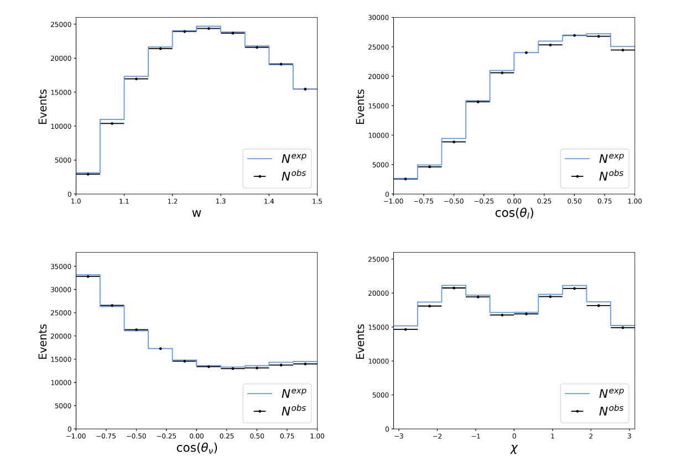
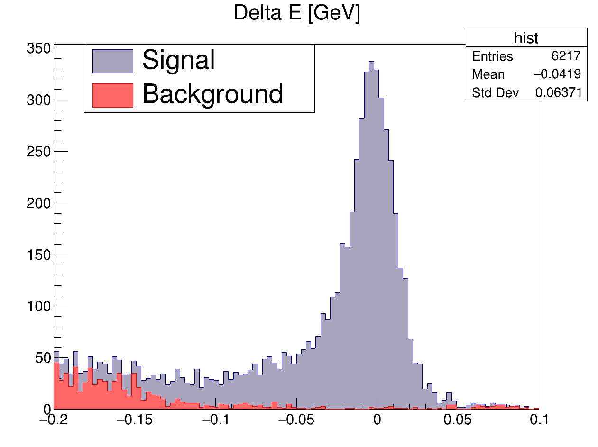
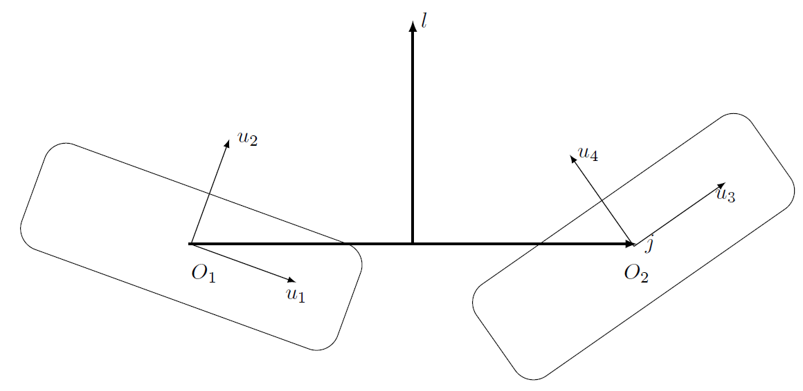
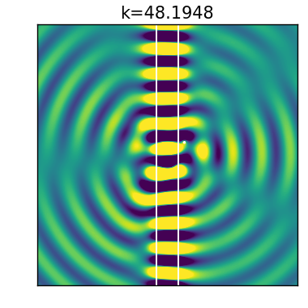

Master's Thesis: In my master's thesis, I focused on the
analysis of measurement data from a particle accelerator.
The aim was to investigate the differences between various methods for determining
a fundamental parameter in particle physics that describes the interaction between certain types of
quarks.
Tools Used: Python, NumPy, SciPy, Matplotlib
View Project

Project thesis: In this project, I analyzed datasets from the international
Belle experiment, which was conducted in Japan from 1999 to 2010.
The goal was to gain insights into a specific particle decay.
Tools Used: C++, CERN ROOT
View Project

Project thesis: In this project, I developed criteria for the overlap of
superelliptical particles, which are important for Monte Carlo simulations.
The task was to develop a mathematical criterion to determine whether these particles overlap,
touch, or are separated.
Tools Used: Mathematica, Fortran
View Project

Bachelor's Thesis: In my bachelor's thesis, I investigated how the propagation
of light in an optical waveguide can be influenced by the placement of nanoparticles.
The goal was to determine whether optical diodes can be realized in this way.
Tools Used: Python, Pandas, Netgen/NGSolve
View Project